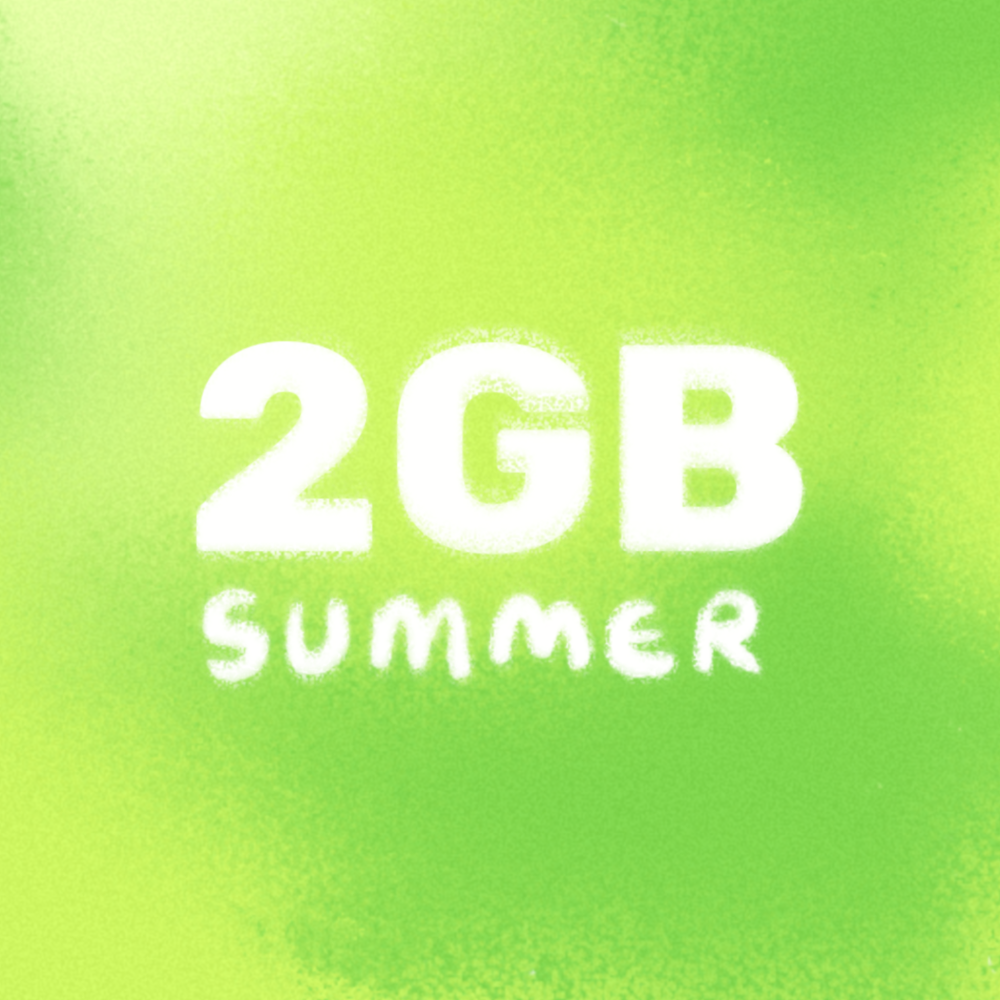
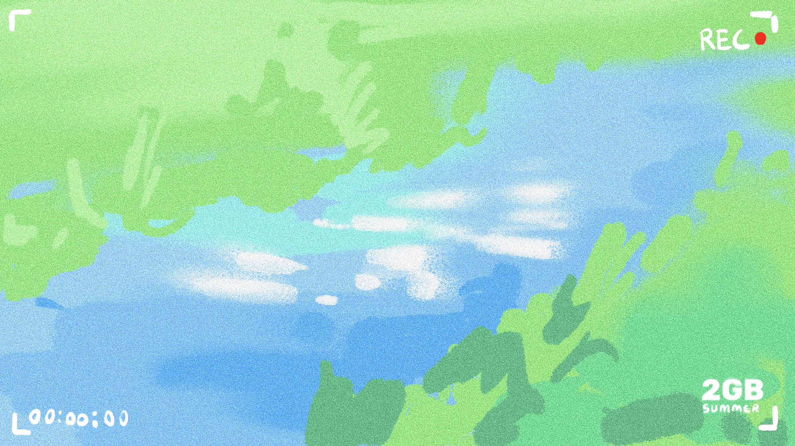
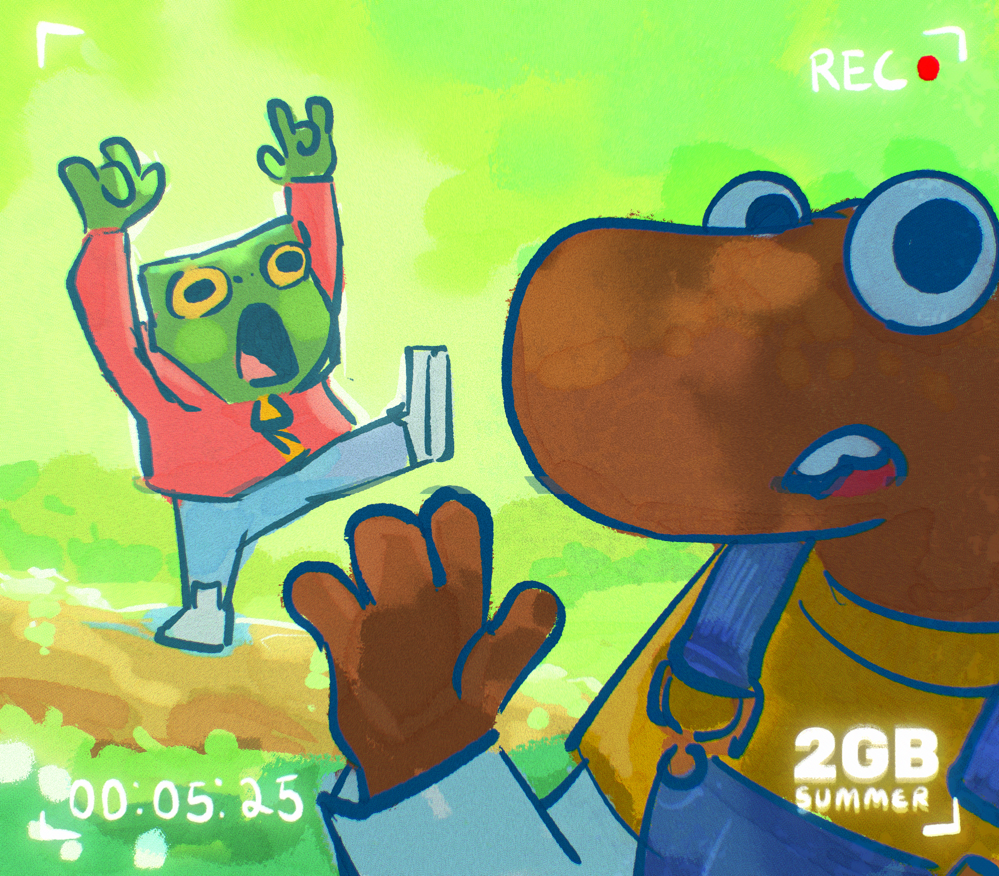
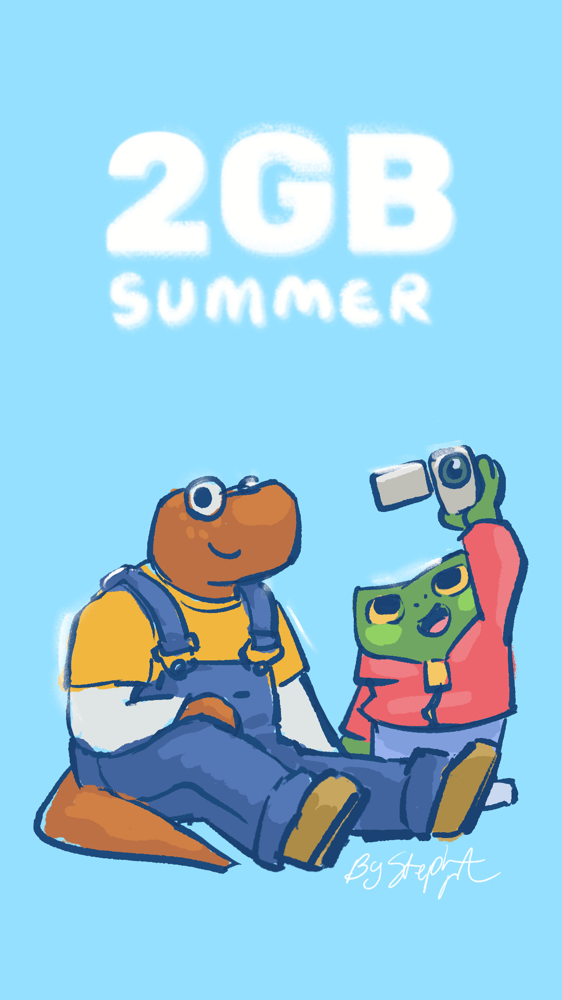
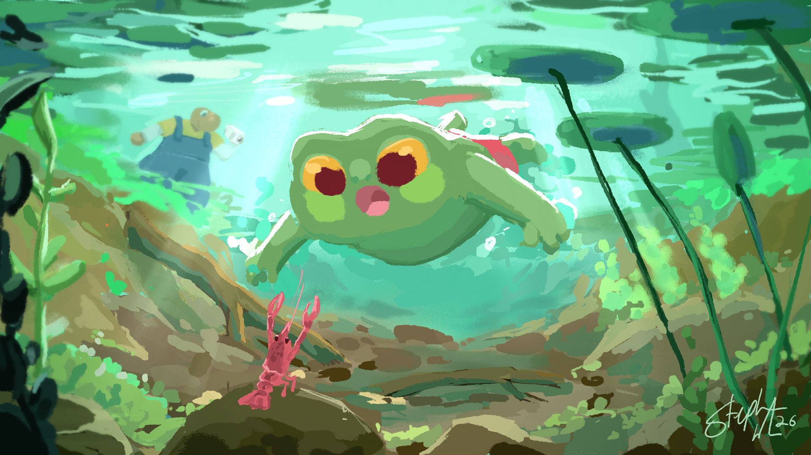
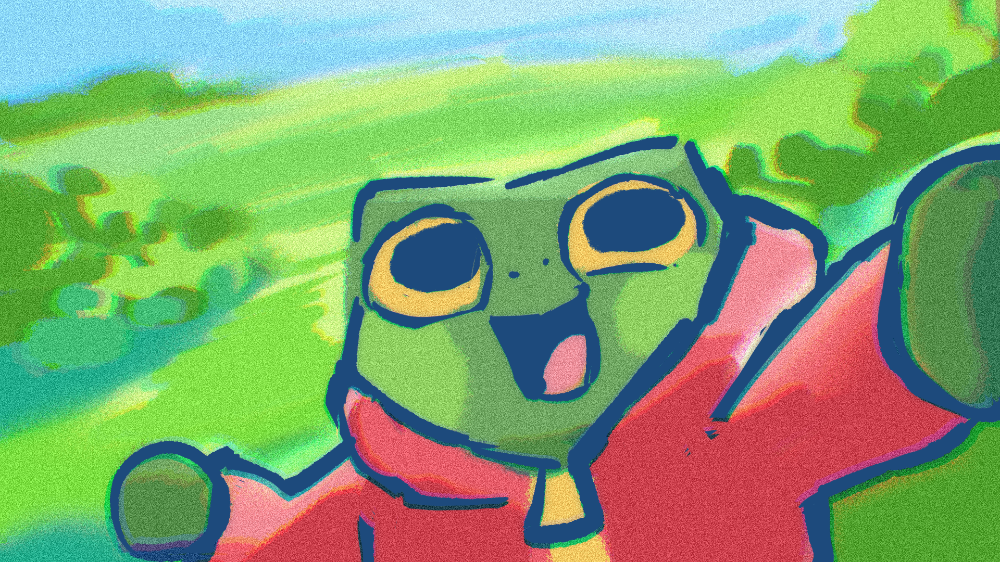
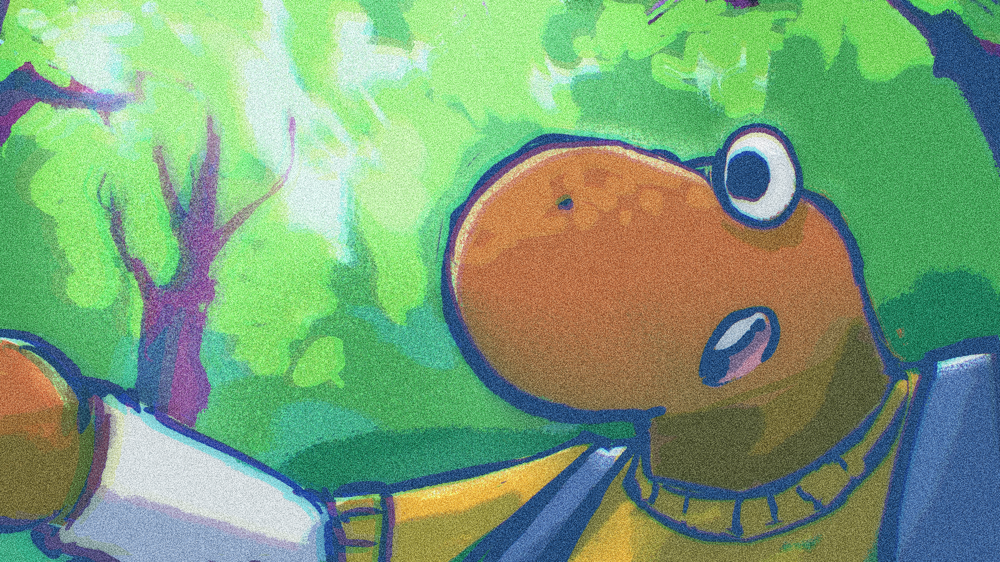
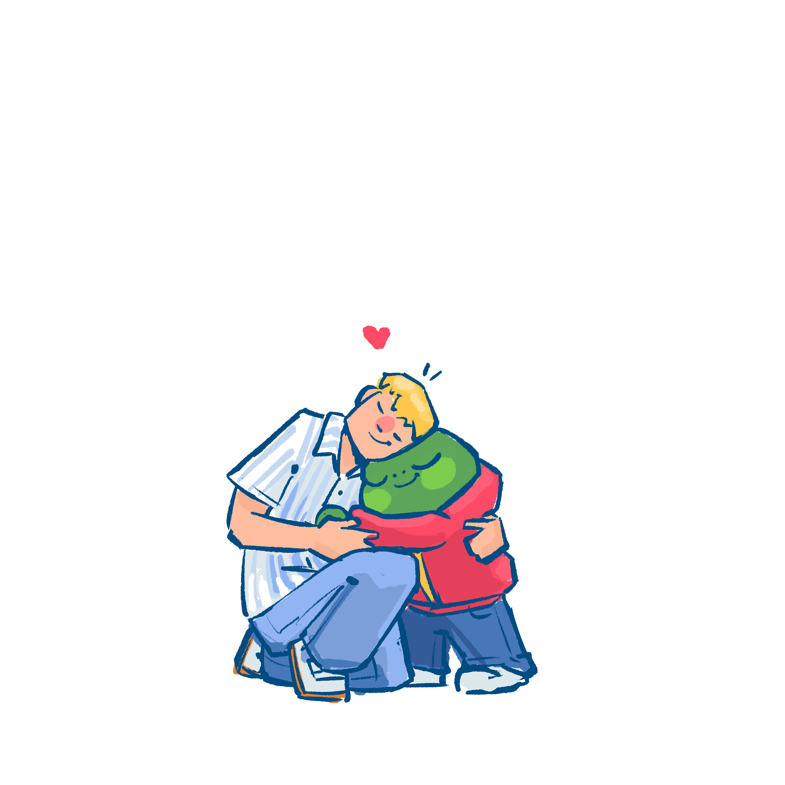

summertime friends turgor the toad and leuko the lizard capture their adventures on turgor’s new camcorder as they frolic in nature and explore the small town of cloudy creek!




turgor
ten and a half years old, turgor loves nature, science, and being alive. he will probably win the science fair at his school this next year

leuko
eleven years old, leuko is cautious of the world around him. he has been collecting the most interesting rocks over the year and is excited to show them to turgor.

2GB Summer is currently in development. follow along by joining my newsletter!
